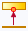
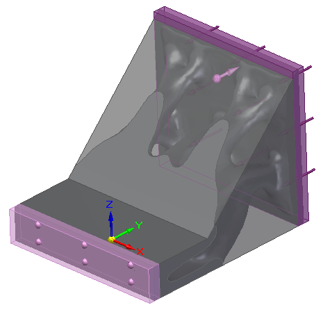
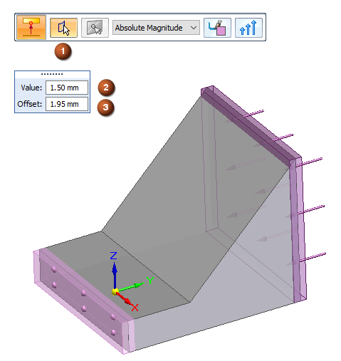
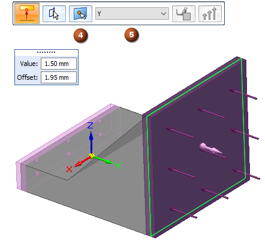
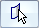
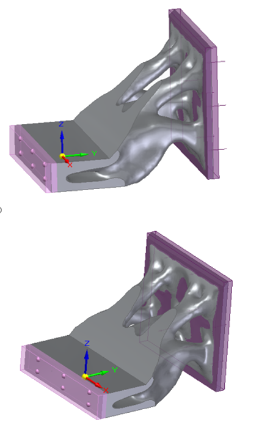
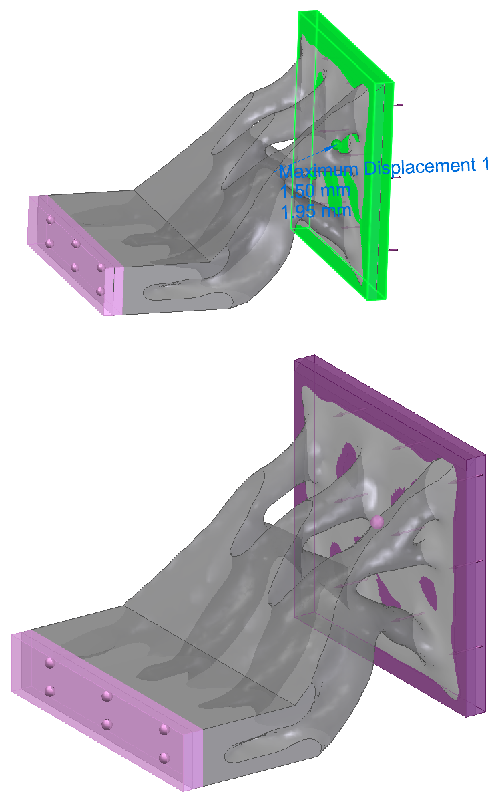
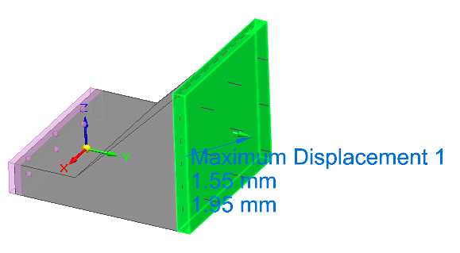

Set a maximum displacement
You can specify a limit to structural optimization in a generative design study. Use the Maximum Displacement command

to define the maximum allowed displacement of a point on a face when loads and constraints are applied to the design body.
-
Apply at least one load and one constraint to the geometry in the design space.
In this example, the following inputs were defined using a material offset value of 1.95 mm:
-
Force load=50000.000 N
-
Fixed constraint
-
-
Choose Generative Design tab→Constraints group→Maximum Displacement .
-
On the Maximum Displacement command bar, provide the inputs in the order shown. You can change the face selection or the point location input by clicking the corresponding step buttons on the command bar.


-

Select Face step—Select a single base face where you want to define maximum displacement. -
In the Value box, enter the maximum displacement distance that the selected face is allowed to move.
-
In the Offset box, specify the additional amount of material to keep. Right-click or press Enter to continue.
Note:The Offset value that is displayed as a default is the recommended value based on the volume of the design space and the default study quality.
-
Point Location Selection step—Click a point on the selected face to define the measure-from point for the maximum displacement value. Right-click or press Enter to continue.
-
From the Direction Type list on the command bar, choose a method to specify displacement direction:
- Absolute Magnitude
-
Select this option to apply the specified displacement value equally in all directions: X, Y, and Z.
- X, Y, or Z
-
Define displacement direction by specifying one direction vector, X, Y, or Z. The displacement value limit is applied only in the selected direction.
Example:-
If you enter a 1.50 mm displacement value and select the Y direction vector, then the selected point will not move by more than 1.50 mm in the Y-direction.
-
If you select Absolute Magnitude as the direction type, then the selected point will not move by more than 1.50 mm in any direction.
Compare the results of solving the study of this design space with and without applying a displacement limit using the Maximum Displacement command. The results on the right show less material was removed, providing greater stiffness and support.
|
Solution 1 - No Maximum Displacement |
Solution 2 - Maximum Displacement Applied |
|---|---|
|
 |
 |
Editing maximum displacement
The maximum displacement symbol is added to the selected geometry in the design space, and an edit definition handle is shown on the design space body, with a label such as Maximum Displacement 1. You can use this handle to edit the inputs.
A corresponding entry is added to the Generative Design pane, under the Constraints node.
-
To review the maximum displacement values, hover over the label name in the Generative Design pane, or click the label to display the handle on the body.
-
To edit the maximum displacement constraint, double-click the label in the Generative Design pane, or click a displayed handle on the body.

How do I
Generative Design workflowGenerative Design example
Suppress individual loads to compare results
Define a physical load condition
Define an operational constraint
Planar Symmetry
Learn more
Using load casesLook up more details
Fixed constraintPinned constraint
Graphic Symbol Size dialog box
Color dialog box